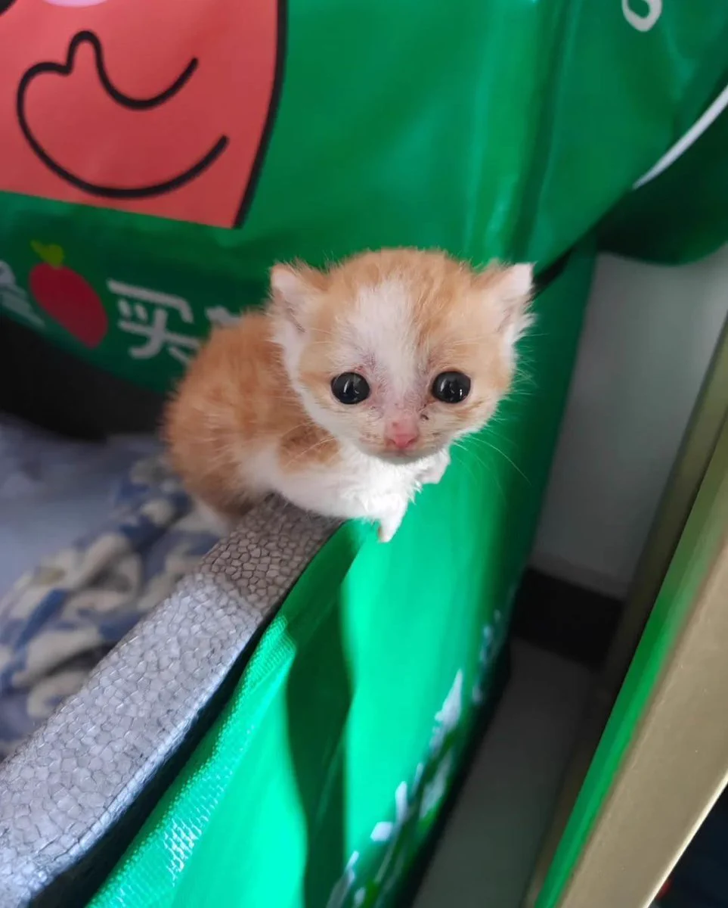

Miert különleges a cic?
csak nézz rá

Stressz- és szorongáscsökkentés
A cicák simogatása és a társaságuk bizonyítottan csökkenti a szervezetben a stresszhormonok (például a kortizol) szintjét, és nyugtatóan hat az idegrendszerre.
A magány enyhítése
Jelenlétük, kötődésük és a róluk való gondoskodás célt, napi rutint ad, ami hatékonyan csökkenti az elszigeteltség és az üresség érzését.
Hangulatjavítás
A macskák társasága és játékos viselkedése stimulálja az agy bizonyos területeit (például a prefrontális kérget), ami pozitív érzelmi válaszokat és jobb közérzetet idéz elő.
Érzelmi támogatás és vigasz
Képesek érzékelni az emberi hangulatváltozásokat vagy arcmimikát, és puszta jelenlétükkel biztonságérzetet nyújtanak a nehezebb életszakaszokban.
Szociális katalizátor szerep
A cicatartók gyakran nyitottabbak, szociálisan érzékenyebbek, és könnyebben teremtenek kapcsolatot más állattartókkal vagy közösségekkel.